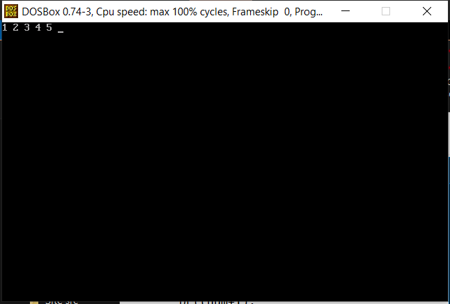

click C programming to go to home page.
| INDEX | ||
|---|---|---|
| Sr No. | Program | Solutions |
| 1 | Q1. Write a program of recursion and display the output. | Solution |
| 2 | Q2. Write a program of recursion with global variable and display the output. | Solution |
| 3 | Q3. Write a program of recursion with local variable and display the output. | Solution |
#include <stdio.h> #include <conio.h> #include <dos.h> void prt(int num) { if(num<=5) { printf("%d ",num); prt(num+1); } } void main() { clrscr(); prt(1); delay(2000); }

#include <stdio.h> #include <conio.h> #include <dos.h> int num=1; void prt() { if(num<=5) { printf("%d ",num); num++; prt(); } } void main() { clrscr(); prt(); delay(2000); }
#include <stdio.h> #include <conio.h> #include <dos.h> void prt(int num) { if(num<=5) { printf("%d ",num); prt(num+1); } } void main() { int num=1; clrscr(); prt(num); delay(2000); }